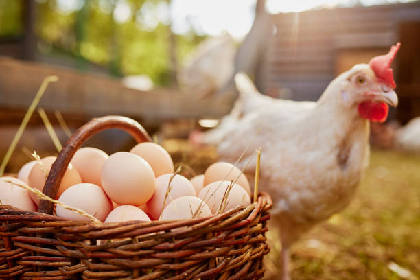

Welcome to The Poultry Farmer
Our Purpose
Our website serves as a hub for customers seeking high-quality poultry products and recipes. It includes:
- Information about our values and farming practices.
- An online store for convenient product purchases.
- Chicken recipes, cooking tips, and preparation guides.
- Customer engagement through a contact form.